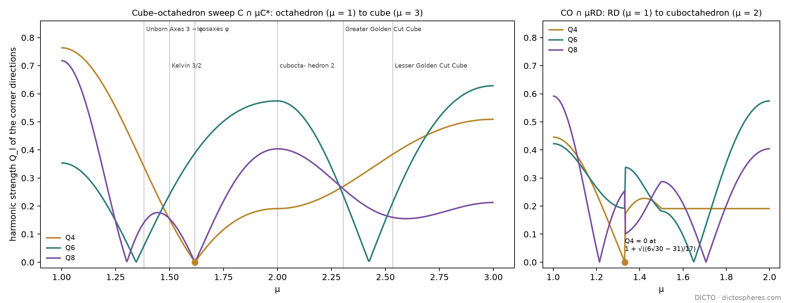

Theorem: along the sweep from the octahedron to the cube, the cubic harmonic of degree 4 vanishes at one solid only, Icosaxes at μ = φ, where every degree with no icosahedral harmonic falls silent; degree 8 vanishes there and at one bronze station
Version 3 corrects the notes on methods: the names of our computers and private file paths are removed, with small wording fixes. No result changes.
A solid can be listened to: its corners, seen from the centre, are notes on a sphere, and each degree of spherical harmonic is a tone. Cubic solids ring in the fourth tone, icosahedral ones never do. Sliding from the octahedron to the cube, the fourth tone falls silent once, at exactly the golden station, Icosaxes, because its corners are two icosahedra. The sound finds the golden point with no geometry put in.
For a finite set of directions u1, …, uN put qlm = (1/N) Σ Ylm(ui) and Ql = (4π/(2l + 1) Σm |qlm|²)1/2 [1]. Ql does not change under rotation; Ŵl is the normalised third-order invariant built with Wigner 3j symbols [12]. Since Frank's observation that liquids favour icosahedral order [6] and the polytetrahedral picture of Nelson and Spaepen [7], these numbers have become the standard local test of order in simulations of crystals, liquids and glasses [8, 9], with known limits [10]. For a set with the full cube–octahedron symmetry every qlm lies in the space of cube-invariant harmonics of degree l, which for l = 4, 6, 8 is one-dimensional, spanned (Meyer [11]) by K4 = x⁴ + y⁴ + z⁴ − (3/5)r⁴, K6 and K8 = Σx⁸ − 14Σx⁶y² + 35Σx⁴y⁴ (sums over the distinct terms; harmonic, checked). Hence Ql = 0 exactly when Σ Kl(ui) = 0, which turns each zero into a polynomial equation.
| Corner set | Q4 | Q6 | Q8 | Q10 | Q12 |
|---|---|---|---|---|---|
| Cuboctahedron (cubic close packing) | 0.191 | 0.575 | 0.404 | 0.013 | 0.600 |
| Anticuboctahedron (hexagonal close packing) | 0.097 | 0.485 | 0.317 | 0.010 | 0.565 |
| Body-centred shell (8 + 6) | 0.036 | 0.511 | 0.429 | 0.195 | 0.405 |
| Icosahedron | 0 | 0.663 | 0 | 0.363 | 0.585 |
| Dodecahedron | 0 | 0.368 | 0 | 0.560 | 0.020 |
| Cube (= tetrahedron) | 0.509 | 0.628 | 0.213 | 0.650 | 0.415 |
| Octahedron | 0.764 | 0.354 | 0.718 | 0.411 | 0.696 |
The first four rows are the classical values [1] and serve as the check of the code. The table shows two limits of the method: the even tones do not hear a point reflection, so the tetrahedron sounds exactly like the cube (its corners and their mirror images are the cube's), and the rhombic dodecahedron's corner directions are the body-centred shell's. The third-order invariant Ŵ6 does separate the dual pair dodecahedron (+0.170) and icosahedron (−0.170): the same tone, opposite sign, corners against faces.

Proof. For 1 < μ ≤ 2 the corners of Pμ are the 24 points (±1, ±a, 0) in all orders, a = μ − 1; for 2 ≤ μ < 3 the 24 points (±1, ±1, ±b), b = μ − 2 (#90). (A) For (1, a, 0), K4/r⁴ = (1 + a⁴)/(1 + a²)² − 3/5, which vanishes when 2a⁴ − 6a² + 2 = 0, that is a⁴ − 3a² + 1 = (a² + a − 1)(a² − a − 1) = 0; in (0, 1) only a = 1/φ, μ = φ. For (1, 1, b), (2 + b⁴)/(2 + b²)² = 3/5 gives b⁴ − 6b² − 1 = 0, whose positive root b² = 3 + √10 is above 1. (B) At a = 1/φ the corners are the cyclic arrangements of (0, ±1, ±1/φ) in both orders, the vertices of two icosahedra (the compound of #90, Figure 1 (c) [2]). Each icosahedron alone has qlm = 0 in every degree that carries no icosahedral harmonic, and the even degrees that carry one are 0, 6, 10, 12, 16, 18, … (the degrees 6p + 10q [3]); so the mean over both vanishes at l = 2, 4, 8, 14. The non-vanishing at l = 6, 10, 12, 16 is the computed value (0.389, 0.313, 0.357, 0.403). (C) With K8, the sum over the corners (1, a, 0) is 6(a² + a − 1)(a² − a − 1)(a² + 3a − 1)(a² − 3a − 1); in (0, 1) the roots are a = 1/φ and a = (√13 − 3)/2 = 1/β3, β3 = (3 + √13)/2 the bronze ratio. On (2, 3) the sum over the corners (1, 1, b) is 3(b⁸ − 28b⁶ + 70b⁴ − 28b² + 9), which has no root in (0, 1); Q8 stays above 0.155. (D) For 1 < μ < 4/3 the corners are the 24 points (±1, ±a, ±a) in all orders and the 8 points (±μ/2, ±μ/2, ±μ/2) (computed face census: 6 squares and 12 hexagons). The eight give K4/r⁴ = −4/15 each, so Q4 = 0 when 24((1 + 2a⁴)/(1 + 2a²)² − 3/5) = 32/15, i.e. 17a⁴ + 62a² − 7 = 0. On (4/3, 2) no zero was found on a grid of 2000 points; from μ = 3/2 on, Q4 stays at the cuboctahedron's 0.1909 to four decimals. ∎
The cubic tone and the eighth tone fall silent together only where the corners become two icosahedra, and the eighth tone alone hears one more of the metallic ratios, the bronze.
The fourth-degree condition a⁴ − 3a² + 1 = 0 is the golden equation twice, for a and for −a; nothing else on the sweep can silence the cubic tone. The eighth-degree condition adds the bronze pair a² ± 3a − 1, the next metallic ratio after the golden one with the same form x² = nx + 1 (n = 1 golden, n = 3 bronze); the silver ratio (n = 2), which carries the Golden Cut Cubes' second field in #90, does not appear. The bronze station μ = (√13 − 1)/2 is not one of the solids named so far; its corners are (1, 1/β3, 0) and it sits between the octahedron and Unborn Axes. Q6 also vanishes twice on the sweep, at a² = (17 − √273)/4 (μ ≈ 1.345) and at μ ≈ 2.424, near Unborn Axes and the truncated cube but at neither.
The second dual sweep, from the rhombic dodecahedron to the cuboctahedron, has no such station: its one zero of Q4 involves √30 and no golden number. So the icosahedral sound belongs to the first pair, the cube and the octahedron, where #48 and #90 found Icosaxes and Unborn Axes in the first place.
The fingerprint was made for networks: physicists compute it at every atom from its nearest neighbours to tell the local order. The same works on our networks. On the stacking ABCBACB, repeated, the twelve neighbours of each ball give Q4 = 0.191 at every straight ball and 0.097 at every twisted one, so the fingerprint reads off the c/h word of the Hexagonality Law papers ball by ball, with no knowledge of the layers (checked on all seven letters). In a network of pieces it does the same for any node: the set of directions to its neighbours, or to the corners of the pieces around it, has a fingerprint that does not depend on how the node is turned, so equal nodes are found wherever they sit, and icosahedral nodes (Q4 = Q8 = 0) stand out among cubic ones.
A sound is one way to judge a solid. Two others come from far away: how much room a solid and its polar leave between them (convex geometry), and how round it is for its surface (soap films). DICTO proposed to run such unrelated tests side by side on the same sweep, so that each checks the others. The sound finds Icosaxes; roundness finds the solid whose faces all touch one ball, for a reason known since 1869; the volume product finds a point just past Icosaxes that has no golden number in it.
For a convex body K symmetric about the origin, Mahler's volume product is f(K) = |K| · |K°|, K° the polar body; it does not change under linear maps, and in three dimensions its least value 32/3 is taken by the cube and the octahedron (Mahler [19]; proved by Iriyeh and Shibata [20]). The isoperimetric quotient IQ = 36π V²/A³ is 1 for the ball and less for every other solid; in n dimensions the same role is played by Vn−1/An.
Proof. For 1 ≤ μ ≤ 2, Pμ is the octahedron μC* (volume 4μ³/3) with six corner pyramids of height μ − 1 cut off by the cube's faces, each of volume 2(μ − 1)³/3; its polar conv(C*, C/μ) is the cube C/μ with a square pyramid of height 1 − 1/μ on each face, of volume 8/μ³ + 6 · (1/3)(2/μ)²(1 − 1/μ) = 8/μ². For 2 ≤ μ ≤ 3, Pμ is the cube with eight corner tetrahedra with legs 3 − μ cut off, volume 8 − (4/3)(3 − μ)³, and its polar is the octahedron with a tetrahedral cap of volume (3/μ − 1)/6 on each of its eight faces, 4/3 + (4/3)(3/μ − 1) = 4/μ. This gives (a), and (b) by substitution. On (1, 2), f′(μ) = −32(2μ³ − 9μ + 6)/(3μ³), which changes sign once, from + to −, at μ*; on (2, 3), f′(μ) = 16(2μ³ − 9μ² + 21)/(3μ²), with one root μ ≈ 2.0853 in the interval, a lower local maximum f ≈ 13.388. The trigonometric form is Viète's solution of the depressed cubic μ³ − (9/2)μ + 3 = 0. ∎
The ends are exactly Mahler's minimum, as they must be: the test passes its calibration. Its maximum lies within 1% of Icosaxes but is not golden, so the volume product does not hear the golden station that the sound hears.
Proof. Lindelöf's theorem [16], extended to every dimension by Minkowski [17] (see also [18]): among the convex polytopes whose facet normals all belong to a given finite set N of directions, the ratio Vn−1/An is largest for the polytope circumscribed about a ball with one facet normal to each direction of N, and only for it and its homothetic copies. Every member of the sweep has its facet normals among the 2n coordinate directions and the 2n directions (±1, …, ±1)/√n, at distances 1 from the centre for the cube's facets and μ/√n for the cross-polytope's. At μ = √n both distances are 1: S√n is circumscribed about the unit ball, and since 1 < √n < n every one of the 2n + 2n directions carries a facet. So S√n is Lindelöf's optimum for this set of normals. No other member is homothetic to it, because its two distances differ. For n = 4, S2 has the 24 corners (±1, ±1, 0, 0) in all orders, the 24-cell. ∎
The studies confirm the theorem from the other side: in three dimensions, for 1 < μ < 2, V = 4μ³/3 − 4(μ − 1)³ and A = 12(μ − 1)² + 2√3(2μ² − 6(μ − 1)²), and d log IQ/dμ is −18μ(μ − 1)(μ − √3) times a positive factor; for n = 2, …, 12 the derivative vanishes exactly at √n, and a numerical scan finds no higher value elsewhere on the sweep. This also explains why the core turn of #81 [23] has the fixed point √3: the turn swaps the two facet distances (#90 [2]), so its fixed point is where they are equal, Lindelöf's point. In the same way the octahedron, where the faces of T and −T are equally far from the centre, is the roundest solid on the tetrahedron's sweep T ∩ μ(−T) of Main theorem (E).
| Test (field) | Special point on Pμ | Named station? |
|---|---|---|
| Q4 = 0 (bond order, physics) | μ = φ | Icosaxes, exact (Main theorem (A)) |
| Q8 = 0 | φ and (√13 − 1)/2 | Icosaxes and the bronze station (C) |
| Q6 = 0 | ≈ 1.345 and ≈ 2.424 | none (§3) |
| Roundness maximum (soap films) | μ = √3 | Lindelöf's point, the core turn's fixed point (Proposition 2) |
| Volume product minimum (convex geometry) | μ = 1 and 3 | octahedron and cube, 32/3 (Proposition 1) |
| Volume product maximum | μ* ≈ 1.6312 | none; within 1% of Icosaxes (Proposition 1) |
Each test lands on a named station only where a known reason puts it there: the sound at Icosaxes, because its corners are two icosahedra; roundness at √3, because of Lindelöf's theorem; the volume product at the ends, because of Mahler's minimum. Where no such reason exists, the extreme falls at an unnamed point. The second dual sweep shows the same.
Computation and proof. (a) The volume V and the polar volume V° are cubic in μ on three pieces, identified from computed hulls by exact fitting (to 10−9) and checked to agree at the joins: on (1, 4/3), V = −6μ³ + 24μ² − 24μ + 8 and V° = 4(3μ + 2)/(3μ³); on (4/3, 3/2), V = −24μ³ + 96μ² − 120μ + 152/3 and V° = 6/μ²; on (3/2, 2), V = 8μ³ − 48μ² + 96μ − 172/3 and V° = 4/μ. The ends give 2 · 20/3 = 40/3. The derivative of the product is −8(3μ⁴ − 4μ² − 8μ + 8)/μ⁴ on the first piece (no root there), −16(9μ³ − 45μ + 38)/μ³ on the second (a lower local maximum ≈ 15.246 at μ ≈ 1.4331) and 16(12μ³ − 36μ² + 43)/(3μ²) on the third. (b) is numerical. (c) The cube's facets |xi| = 1 are present on the whole sweep, so a ball touching all facets has radius 1 and centre 0. For 1 < μ < 4/3 the other facets are the rhombic dodecahedron's, at distance μ/√2 < 1; for μ > 4/3 the corners (μ/2, μ/2, μ/2) are cut by the cuboctahedron's triangles |x| + |y| + |z| = 2, at distance 2/√3 ≠ 1. ∎
So on the second sweep neither roundness nor the volume product lands on a station, and Lindelöf's theorem says why for roundness: the cuboctahedron's own two kinds of face are at different distances, and no member makes all its faces touch one sphere. The exact point √3 of the first sweep is particular to the cube–octahedron pair, for the classical reason, not by coincidence.
The second walk through cubic solids, the Delian walk of #51, has a silent point too, but it is a plain fraction, and the eighth tone never joins it: no icosahedral order is hidden on this walk.
Paper #51 [21] cuts every double cone of the octet by one plane at fraction t and gives the two sides to their centres; for 0 < t < 1/3 the octahedral piece O(t) is Kepler's rhombic dodecahedron with its eight three-fold corners cut by the planes s · x = 3(1 − t)/2, s = (±1, ±1, ±1), and the tetrahedral piece T(t) is a regular tetrahedron; for 1/3 < t < 1, O(t) is a regular octahedron and T(t) the cube with four alternate corners cut (the definitions of #93 [25]).
Proof. The 30 corners of O(t) are the 6 points (±1, 0, 0) in all orders and the 24 points (±p, ±q, ±q) in all orders, p = (1 + 3t)/2, q = (1 − 3t)/2. The six give K4/r⁴ = 2/5 each; the 24 give (p⁴ + 2q⁴)/(p² + 2q²)² − 3/5 each. The sum is −4(t − 1)(3t + 1)²(9t − 1)/(9t² − 2t + 1)², whose only zero in (0, 1/3) is t = 1/9, where the 24 corners point along (2, 1, 1). The zeros of Q8 and the values for T(t) are computed on the study's grid. ∎
On the cube–octahedron sweep Q4 and Q8 vanish together at Icosaxes because two icosahedra hide there. On the Delian walk they never vanish together, so the walk has no hidden icosahedral station; its one cubic silence sits at a rational point.
The same listening works on the 3-sphere, for the corners of four-dimensional solids. On #91's sweep from the 16-cell to the tesseract the cubic tone falls silent only at the 24-cell, the same solid that Lindelöf's theorem makes the roundest.
For corner directions ui on the 3-sphere, Ql² is the mean over all pairs of Ul(ui · uj)/(l + 1), Ul the Chebyshev polynomial of the second kind (the zonal harmonic of degree l on the 3-sphere). For a corner set with the full symmetry of the tesseract, the invariant harmonics of degree 4 and of degree 6 each span one dimension, spanned by K4 = Σxi⁴ − r⁴/2 and K6 = Σxi⁶ − (5/4)r²Σxi⁴ + (5/16)r⁶ (harmonic, checked), so again Ql = 0 exactly when Σ Kl(ui) = 0. The calibration of this four-dimensional test on the regular polytopes (the 600-cell and the 120-cell are silent in every degree from 1 to 11, spherical 11-designs as is classical [24]) belongs to the Alicia in Wonderland volume and is reported there.
Proof. The corners are the points (±1, ±a, 0, 0) with a = μ − 1 on (1, 2), (±1, ±1, ±b, 0) with b = μ − 2 on (2, 3) and (±1, ±1, ±1, ±c) with c = μ − 3 on (3, 4), each in all orders. (a) Per corner, K4/r⁴ is (a² − 1)²/(2(1 + a²)²), b²(b² − 4)/(2(2 + b²)²) and (c⁴ − 6c² − 3)/(2(3 + c²)²) on the three pieces; the only zero in the open pieces and their joins is a = 1, b = 0, which is μ = 2, where the corners are (±1, ±1, 0, 0) in all orders. (b) Summed over the orders, K6/r⁶ is proportional to (a² − 2a − 1)(a² + 2a − 1)/(1 + a²)² on (1, 2), to (b² − 2)(b² − 2b − 2)(b² + 2b − 2)/(2 + b²)³ on (2, 3) and to (c⁶ − 15c⁴ + 75c² + 3)/(3 + c²)³ on (3, 4), with positive constants. In (0, 1) the only roots are a = √2 − 1 (μ = √2) and b = √3 − 1 (μ = 1 + √3); the last factor is positive on [0, 1]. (c) follows from (a) and (b), since φ² ≈ 2.618 and 2 + 1/φ² ≈ 2.382 are none of these points. ∎
At μ = √2 the corner coordinate is a = √2 − 1 = 1/(1 + √2), the reciprocal of the silver ratio, which the degree-4 and degree-8 conditions of the three-dimensional sweep do not contain (§3). The All-Golden stations are not heard: their golden content lives in the shapes of their cells, not in the directions of their corners, and that is outside what this test can see. In four dimensions the sound and roundness agree: the 24-cell, silent through degree 5, is also the roundest member of the sweep (Proposition 2, n = 4).
Known, credited. The invariants Ql, Ŵl and their classical values for the cubic, hexagonal and body-centred shells and the icosahedron: Steinhardt, Nelson and Ronchetti [1]. The degrees of icosahedral harmonics: Klein's invariants of degrees 6, 10, 15, and [3]. The sweep and its stations: #90 [2], #48 [4]; Icosaxes as the hull of two icosahedra: #90 [2]. The metallic ratios are classical [13]. The idea of hearing the solids is Kepler's [14]; the icosahedral cluster of Mackay [15] is the physical icosahedral shell. Version 2: Mahler's volume product and its minimum 32/3 at the cube and the octahedron, Mahler [19] and Iriyeh and Shibata [20]; the roundness of polytopes circumscribed about a ball, Lindelöf [16] and Minkowski [17] (see [18]), so Proposition 2 is a classical theorem read on our sweep, not a new result; the spherical designs of the regular polytopes, Delsarte, Goethals and Seidel [24]; the Delian walk, #51 [21] and #93 [25]; the four-dimensional sweep and its All-Golden stations, #91 [22]; the core turn, #81 [23].
Proved here. (A)–(E). We did not find in the sources checked a fingerprint of the cube–octahedron truncation family, nor the golden and bronze zeros. The classical uses fingerprint the neighbour shells of atoms; here the same numbers are read along a one-parameter family of solids, where they pick out its golden station. Version 2: Propositions 1, 3, 4 and 5 (the volume product along both sweeps, the Delian walk's silent point t = 1/9, the four-dimensional zeros), and the exact checks of Proposition 2 for n = 2, …, 12 on our sweeps. The sources checked found none of these computed for these families.
Sources checked for Version 2. The reference library (kaleidohedra-references, INDEX) was searched for Lindelöf, Minkowski, Fejes Tóth, isoperimetric, Mahler, Iriyeh, Santaló, Steinhardt, Bannai, Goethals and Delsarte. It holds Minkowski 1897 [17] as a link only (not read), and on isoperimetry only papers on a different question, the isoperimetric problem among parallelohedra (Lángi 2021, arXiv 2102.11621; Cesaroni and Novaga 2026, arXiv 2603.27221; Novaga and Song 2026, arXiv 2610.01653); none of these mentions Lindelöf. It has no entry for Lindelöf, Mahler or Iriyeh–Shibata: [16], [19] and [20] are cited from their standard bibliographic records, and [20] as found for The DICTO Concordance, Part 5.5. The study notes used: studies 2026-11-04-mahler-sweep, 2026-11-04-tetra-sweep §3, 2026-11-04-harmonic-4d and 2026-11-04-harmonic-fingerprint § Delian walk.
Open. The fingerprint of the golden nests and of the OG shells against the icosahedral clusters of quasicrystals; the odd degrees (l = 3, 7, 9), which hear the tetrahedron's mirror image; the reason Q4 is constant from μ = 3/2 to 2 on the second sweep; the sweep from the icosidodecahedron to the rhombic triacontahedron; the exact roundness maximum and the exact zeros of Q8 on the second sweep and the Delian walk; the volume product along the four-dimensional sweep.
studies/2026-11-04-harmonic-fingerprint: fingerprint.py (all Ql, Ŵ6, the sweep, data/fingerprint.log, .json), fig_sweeps.py (Figure 1); studies/2026-11-04-co-rd-sweep: co_rd_sweep.py (face census and Q4 on the second sweep). Version 2: studies/2026-11-04-mahler-sweep (README: the exact volumes and products of Propositions 1 and 3, the roundness formula); studies/2026-11-04-tetra-sweep (sqrt_n.py and data/sqrt_n.json, the exact check n = 2, …, 12 of Proposition 2; sweep4d.py, data/sweep4d.json; measures.py, the tetrahedron sweep); studies/2026-11-04-harmonic-4d (README: Proposition 5 and the calibration); studies/2026-11-04-harmonic-fingerprint, README § Delian walk (Proposition 4). Run with Python 3, numpy, scipy and sympy (exact polynomials for K4, K6, K8).